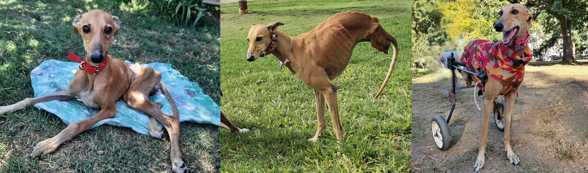
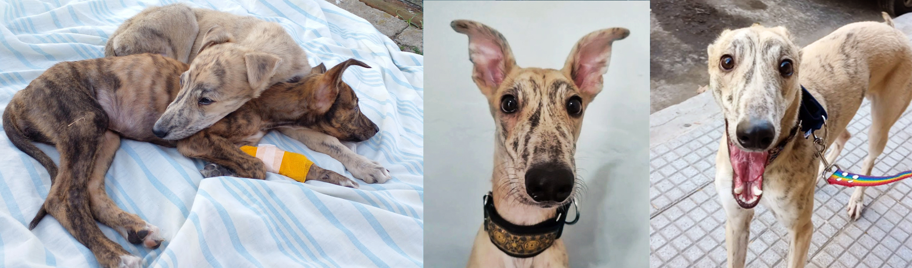
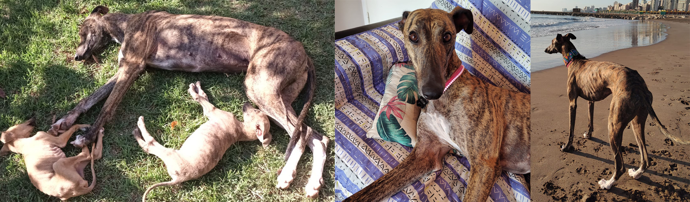
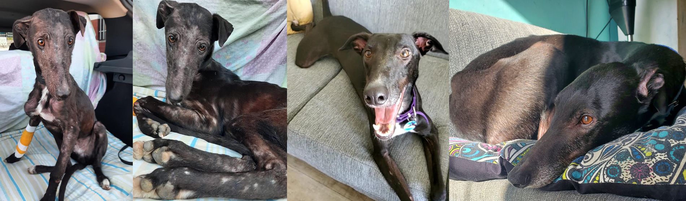
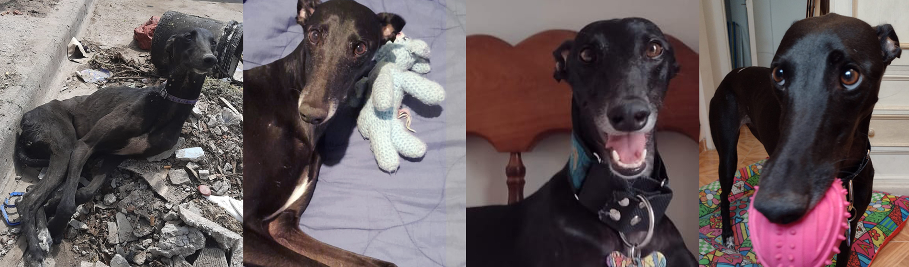
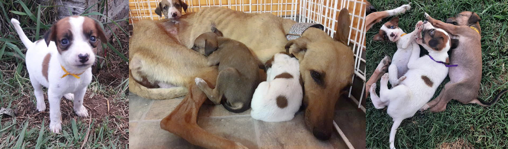

Historias
ANITA
Era un mediodía muy caluroso cuando nos llegó un pedido de ayuda para rescatar una galguita que había sido atropellada en la Ruta Nacional 188 a la altura de Rojas. Varios metros antes de llegar vimos su cuerpito inmóvil siendo esquivado peligrosamente por los vehículos que pasaban, indiferentes e insensibles ante semejante escena. Pensamos que habíamos llegado tarde, pero no, Anita estaba viva! En total estado de shock, deshidratada, ensangrentada, muerta de miedo y cubierta de hormigas coloradas; nuestra chiquita aún respiraba. Viajamos a la vete donde luego de ser estabilizada tuvimos el más terrible diagnóstico: fractura de columna. Fue un mes durísimo en el cual Anita fue operada y tratada por otras lesiones hasta que por fin estuvo en condiciones de dejar la vete y viajar a Capital para ser recibida por la familia de tránsito más increíble que pudiésemos desear. Anita fue creciendo rodeada de amor y haciéndose cada vez mas fuerte. La falta de sensibilidad en sus patas traseras no le impidió adaptarse a su carrito ni a caminar increíblemente sólo con sus patas delanteras. Siendo testigos de la fortaleza, la garra y la voluntad de esta galguita; tanto su familia, sus vetes y nosotras, decidimos realizarle una cirugía de doble amputación para que por fin tenga la independencia y la libertad de movimiento que ella tanto deseaba. Y como la Galga Milagro que es, se recuperó maravillosamente y hoy se maneja sin problemas demostrando que la falta de sus dos patitas no le impiden absolutamente nada y que siempre se puede un poco más. Anita es la prueba indiscutible de que podrán destruir los cuerpos de nuestros galgos, pero su corazón jamás. Es ese corazón intacto el que les permite recuperarse y renacer, superar el dolor y el odio, y volver a confiar y amar.
ASLAN Y AMPARO
En noviembre del 2001 rescatamos a los bebes Aslan y Amparo. Pesaban menos de 3kg y habían pasado de mano en mano. A Aslan le habían dado aceite de cocina usado para tomar y recuperarse de eso fue su primera batalla. Cada día con ellos era un sube y baja de emociones: se recuperaban y nuevamente comenzaban a decaer. Íbanos y veníamos de distintos veterinarios donde los internábamos en forma ambulatoria para no separarlos ni estresarlos. Era sentir la alegría y el alivio de creer que lo lográbamos y al ratito la tristeza de perderlos en cualquier momento. Los cuidamos y amamos con locura, hicimos hasta lo imposible por ellos y nada fue suficiente para nuestra pequeña Amparo. Una de tantas madrugadas que pasamos sin dormir, no pudo con tanto dolor y decidido que era mejor sacrificar ese cuerpito cansado y enfermo para unir su corazoncito al de su hermano y así hacerse uno solo mucho mas fuerte y ganarle a la mismísima muerte. Y desde entonces Aslan comenzó a crecer sano y fuerte, bello y valiente. Porque nada se pierde, todo se transforma; y el verdadero amor siempre pero siempre vence. Hoy Aslan es un galgo gigante y hermoso que disfruta de una vida soñada junto a su maravillosa mamá humana y es el dueño de un corazón inmenso donde habita siempre el corazón de su hermana Amparo.
HELENA
La primera vez que la vimos comía con desesperación un hueso viejo y sin carne. Las garrapatas se agrupaban por docenas en todo su cuerpo, camufladas entre la mugre y las heridas. Quienes luego la abandonarían nos contaron su historia. Helena estaba preñada y en la calle, como muchos de los galgos de los galgueros, que son "liberados" sólo para que se alimenten de la basura de los vecinos cuando no es temporada de caza. Hele fue atropellada y tuvo a sus bebés cómo y dónde pudo. Antes de nuestra llegada "regalaron 2, no sabían decirnos a quién ". Los 3 restantes aún seguían con ella y también Beethoven, un bebito mestizo hermoso que la misma Helena había adoptado y cuidado como propio. Porque por más triste y traumática que haya sido su historia, el corazón del galgo no concibe el odio y el abandono. Y nuevamente Hele y su familia fueron abandonados, porque el corazón humano si sabe de traición, de desamor y de abandono. El pequeño Beethoven no lo logró, su cuerpito cansado y tantas veces abandonado no pudo con tanto y partió ahí donde ya no duele. Mientras tanto, sus 3 hermanitos y su mamá del corazón le pelearon con todas las fuerzas a la muerte y, después de varias batallas, ganaron heroicamente. Y nunca olvidamos que había 2 bebés más que debíamos encontrar, que seguramente estaban en las peores manos si es que aún vivían. Y ocurrió el milagro: primero recuperamos a Olaf y tiempo después el destino nos llevó a Diego. Porque, así como ellos no se rinden ni olvidan nosotras tampoco y nunca dejamos de buscarlos. Hoy, Hele es la mimada de su familia perfecta, es feliz corriendo libre con sus hermanos en la playa y durmiendo calentita en su enorme sillón. Sus bebitos gigantes, Paz, Shlerlock, Watson, Olaf y Diego son profundamente amados y cuidados por sus hermosas familias. Todos ellos lo lograron y estamos seguras de que una partecita del corazoncito de Beethoven late y vive en los corazones de sus hermanos y de su mamá, donde él también es muy pero muy feliz.
PABLITO
Solito y chiquito iba caminando lento y cansado nuestro querido Pablito. Silencioso, rengo e invisible ante quienes lo cruzaban, dueño de los ojos más tristes del mundo, vacíos de amor y llenos de miedo. La sarna y el descuido le habían quitado casi todo su pelito, y el abandono y la indiferencia se habían llevado sus ganas apagando su mirada. Quienes rescatamos somos puentes. Puentes por donde nuestros galgos atraviesan su camino de recuperación para poder llegar hacia sus familias definitivas y su libertad. Somos puentes de ida, pero también de vuelta para que cuando nos necesiten sepan que pueden regresar, que su puente esta ahí, fuerte, seguro, intacto… Debemos ser ese puente para nuestros galgos y también para sus familias que muchas veces necesitan del apoyo y ayuda en los momentos más difíciles de sobrellevar. Nuestra función es unir, nunca restar. Pablito atravesó con valentía su puente, dejó atrás la tristeza y el dolor y se transformó en un Galgo alegre, sano y feliz, encontrando un hogar para siempre con una familia hermosa que lo recibió para darle todo su amor.
NAIROBI
En octubre del 2021 a Nairobi la habían desechado sobre una montaña de basura. Estaba sucia, repleta de pulgas piojos y garrapatas, con heridas abiertas, muerta de miedo, y un abandono en los ojos que daban ganas de llorar. Como no podía caminar la abrazamos despacito y llevándola upa la pusimos a resguardo. La bañamos, medicamos y cuidamos hasta que comenzó a tener las ganas de vivir que otros le habían arrebatado. Y a fuerza de amor, tiempo y constancia, la negrita mas bella del mundo, la de las patas infinitas, comenzó a sonreír, a ser feliz, a ganar la fuerza y confianza necesarias para volver a caminar e incluso correr. Y terminó su recuperación en un hogar de transito amoroso para luego ser elegida por una familia hermosa para siempre, donde es profundamente amada y respetada. La historia de Nairobi debe recordarnos que estos seres son sobrevivientes de todo lo malo que el humano puede ser y hacer. Que antes de nosotros fueron golpeados, mutilados, violados, explotados, torturados, humillados, aterrorizados y todo lo peor que podamos imaginar y más también. Y aún así sobreviven… Aún si confían… Aún asi aman. Son dignos, valientes, leales íntegros, luchadores… Son invencibles… En fin, SON GALGOS.
NOVA
Había una vez una estrellita chiquita que se aventuró solita a conocer La Tierra. Cayo imperceptible, en una sucia y fría cuneta, y se escondió asustada en la oscuridad. Allí entre la basura y el olvido, Enya y sus bebes también se ocultaban. Nova los vio y maravillada ante la belleza de esos seres decidió tomar su forma y acurrucarse con ellos sin que se dieran cuenta. Los ricos y poderosos pasaban sobre ellos cada día, ciegos e indiferentes, carentes de bondad y de compasión. Con el paso de los días, el hambre y el abandono enfermaban y debilitaban a Enya y sus bebes. Entonces Nova utilizó sus ultimas fuerzas y brilló muy fuerte para que podamos verla. Y así fue como los encontramos y pudimos rescatarlos. Tanto fue el esfuerzo que hizo la pequeña galguita Nova para salvar a su familia que se fue apagando poquito a poquito hasta finalmente desaparecer. Y así volvió al cielo, donde volvió a brillar mas fuerte que nunca, porque las estrellas siguen brillando aun cuando han muerto, y no hay fuerza que las pueda apagar…